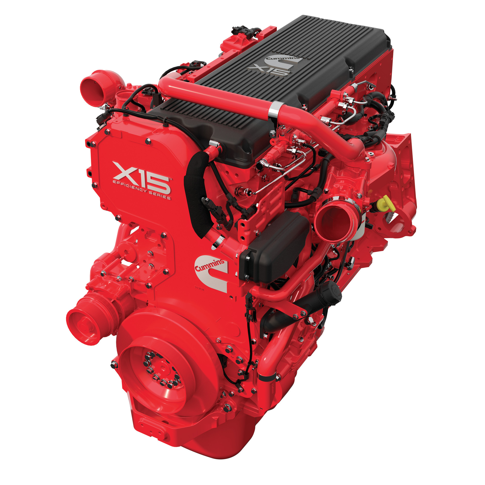

Worked part of the current product support design team. I worked on projects that require design & analysis work for the current engines on the field or on-site. Typical work ranged from new improvement to engine performance, cost reduction, various analysis to determine improvements in design, producing design model/drawings solutions and then analysis for robustness. Produced Cummins technical reports on the design and analysis work carried out, which was uploaded onto the Cummins database of reports for reference. Worked in two cross-functional 6- sigma team as a design engineer, provided design work for the major 6-sigma project, communicated and attended weekly meeting with the team and supplier, presented my work on a weekly basis. Undergone further training provided by Cummins, from weekly power cylinder classes, weekly and monthly communication meeting, ansys training to drafting training. Also gained work experience in other department, for example working in the Metallurgy Lab doing hardness testing on crankshaft and understanding material structure under failure loads. Also Cummins Supplier visit, such as piston, Con-Rod, pipes, rapid prototype supplier’s site to understand how our parts are manufactured. Cummins also invited supplier for lecture talks of their service and capabilities. Also became a registered member of the IMechE and completed quarterly technical reports, this one year experience can lead to my Charter Status. Project portfolio of detail work can be provided.
